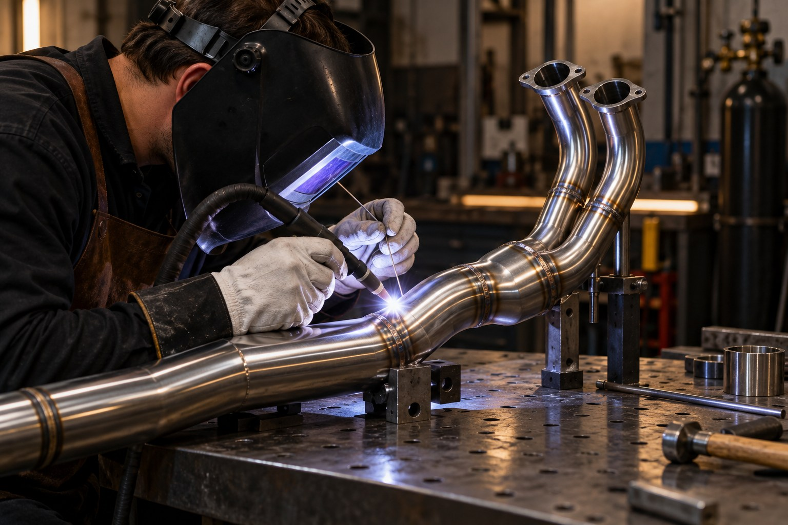
FabricationWhy Custom Exhaust Fabrication Matters
A well-built exhaust is shaped around the engine, chassis and rider. Routing, material, weld quality and heat control all affect the finished motorcycle.
Read ArticleDeep dives into custom motorcycle planning, carburetor jetting, chassis triangulation, vintage engine overhauls, and shop diaries.

FabricationA well-built exhaust is shaped around the engine, chassis and rider. Routing, material, weld quality and heat control all affect the finished motorcycle.
Read Article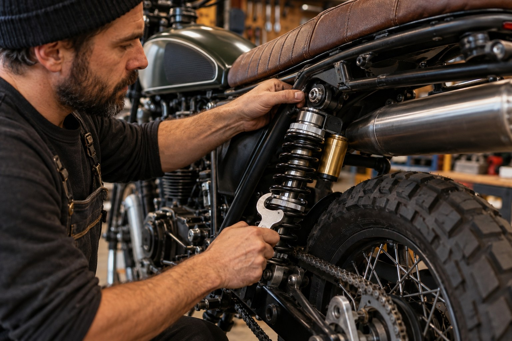
PerformanceSet rider sag first, then tune preload, compression and rebound around the motorcycle, rider weight and roads it will see.
Read Article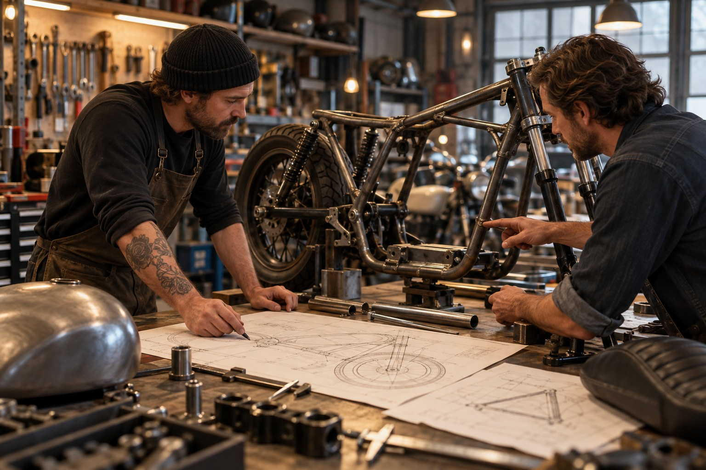
Custom BuildsA complete build plan connects the rider’s brief to geometry, ergonomics, parts selection, fabrication milestones and a realistic road test.
Read Article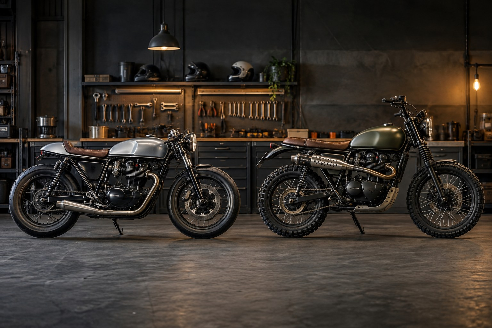
Custom BuildsCompare riding posture, wheel and tire choices, suspension travel and everyday use before choosing a cafe racer or scrambler direction.
Read Article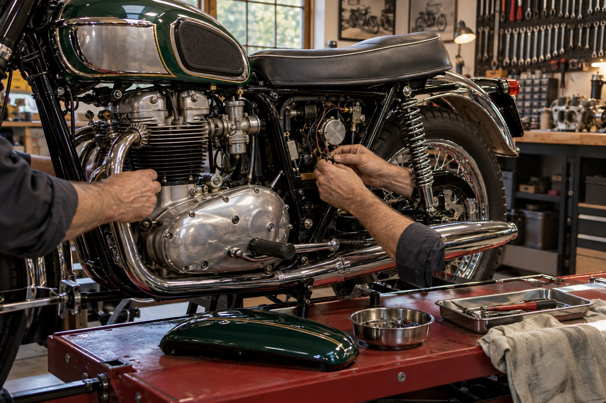
RestorationA dormant motorcycle needs a careful inspection of its frame, fuel system, engine, brakes and wiring before anyone tries to start it.
Read Article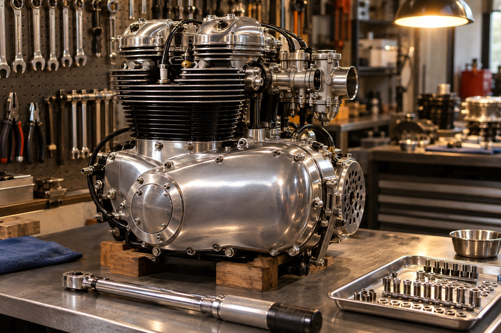
WorkshopA reliable rebuild depends on clean measurement, careful machine work, correct clearances and a documented assembly process.
Read Article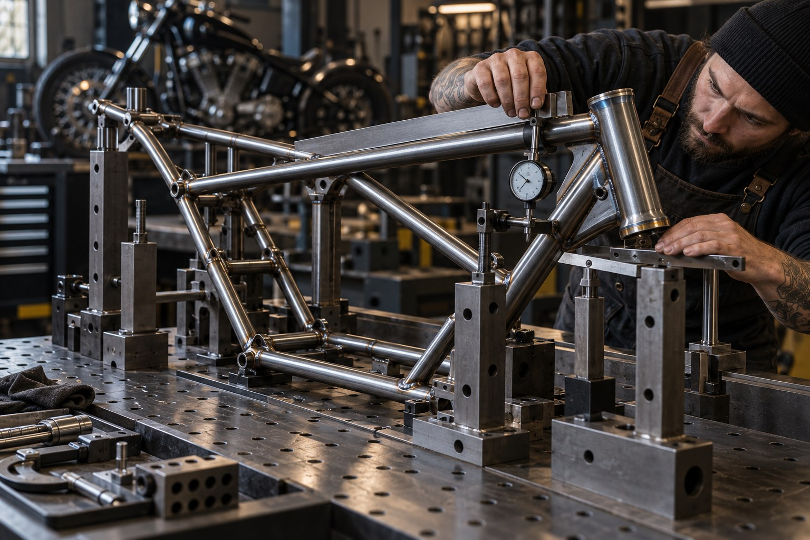
FabricationTIG welding gives a fabricator control over thin motorcycle tubing, but joint fit, material preparation and fixture strategy matter just as much.
Read Article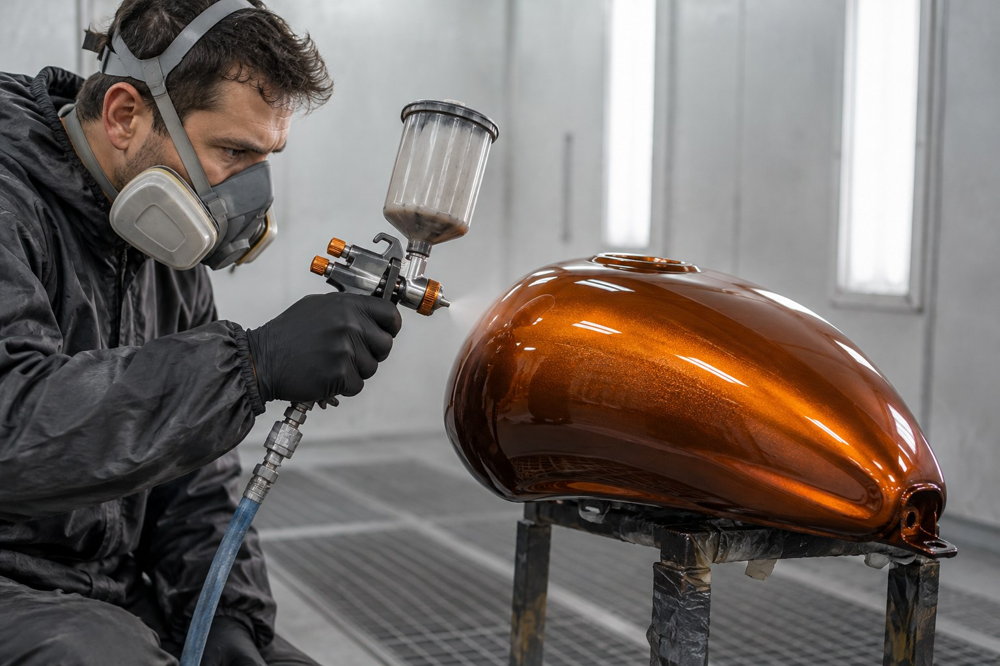
FinishingCompare paint systems by substrate, use, repairability, heat exposure and the care the finish will need after delivery.
Read Article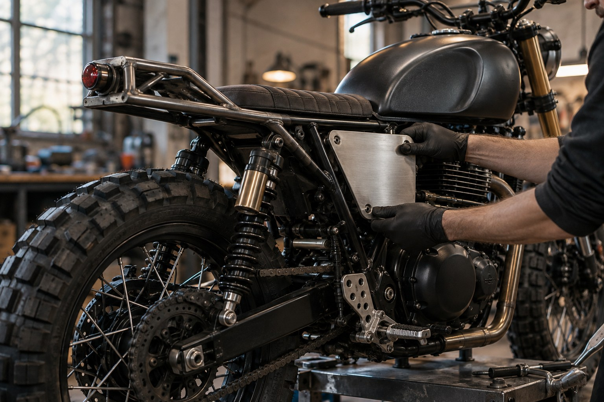
RestorationA safe vintage loom starts with a circuit map, sound grounds, protected connections and a plan for charging, lighting and ignition loads.
Read Article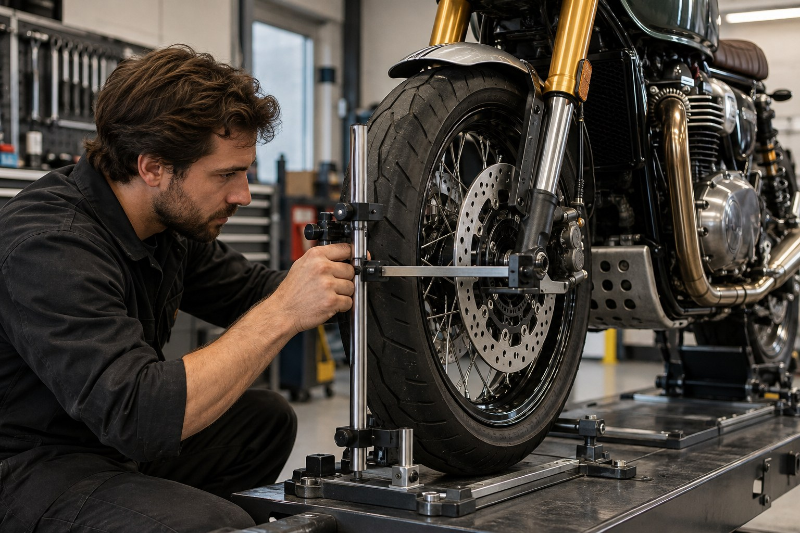
PerformanceBetter braking starts with condition and setup. Match pads, rotor, master cylinder and tire grip to the motorcycle before adding parts.
Read Article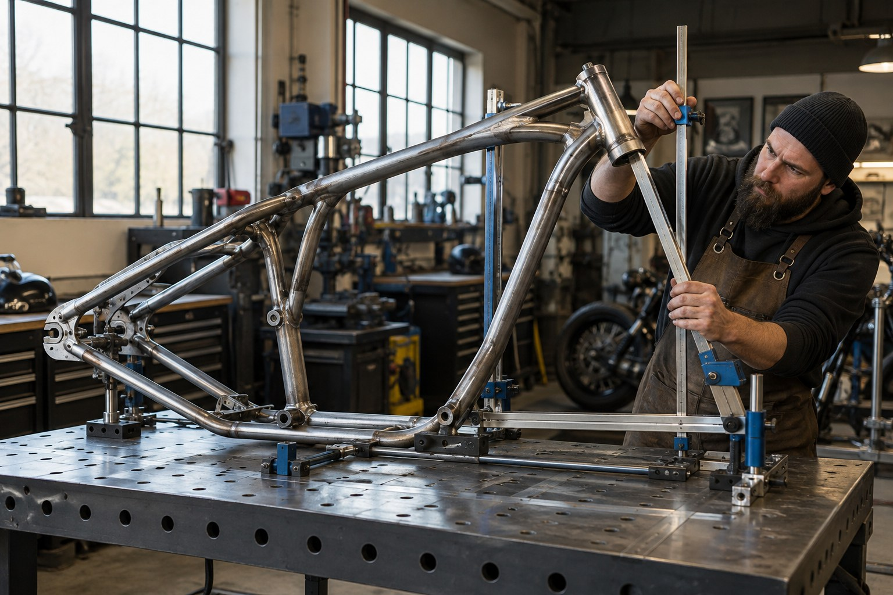
FabricationFrame changes begin with measured datums, a load-path plan and fixture control, followed by inspection before the motorcycle is assembled.
Read Article